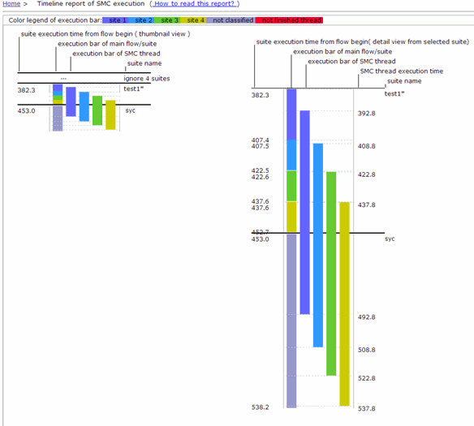

Timeline of SMC execution
Test Time Breakdown Analyzer can analyze the execution timeline of SMC threads if you select the Analyze timeline of SMC threads in the Preference window.
To view the details of the report, click timeline of SMC execution in the Test time analysis report table. The timeline of SMC execution is shown as illustrated in the following figure:

In the report, The top-left timeline diagram is the thumbnail of the complete flow execution with multiple threads. Click each test suite block to view the detailed multiple-threads timeline on the right side.
- All test time values are referenced to the flow start time with the unit [ms]. The first timeline column means the main flow thread. Others are SMC kick-off threads.
- If there is no SMC thread during a test suite execution, the test time of this suite is ignored.
- Pause the cursor on one block for a second and more information is displayed in the tooltip.
Functional changes
- Introduced in SmarTest 7.2.2